E’ stato il comunismo a creare il concetto di “Made in Italy”?
Paolo Volterra ![]()
Una premessa doverosa
Gli archivi storici dei quotidiani sono a pagamento. L’unico gratuito che ho trovato è quello del quotidiano “l’Unità”. Li ringrazio. Avrei voluto usare più fonti online per essere asettico, ma la fonte, principale, ha dato una chiave di lettura interessante e originale di come è evoluto il marchio”Made in Italy”. I video invece sono dell’Istituto Luce. Nessun intento di appropriarmi di documenti, marchi o altro; solo una rilettura alternativa (e plausibile) della storia.
Il concetto di “Made in Italy” non nasce come brand, non nasce da una politica industriale, e non nasce nemmeno dall’industria più forte d’Italia. Potrebbe nascere come formula inglese usata dai comunisti italiani per marcare indirettamente l’imperialismo americano, viene trasformata in titolo di uno spettacolo teatrale, o in etichetta doganale, poi in orgoglio manifatturiero, e infine in sistema economico riconosciuto globalmente.
Questo documento ricostruisce quella traiettoria usando principalmente gli articoli storici del quotidiano l’Unità (1948–1985), note di ricerca, cinegiornali INCOM, dati PIL regionali e il lavoro teorico di Giacomo Becattini.
Una formula contro il nemico
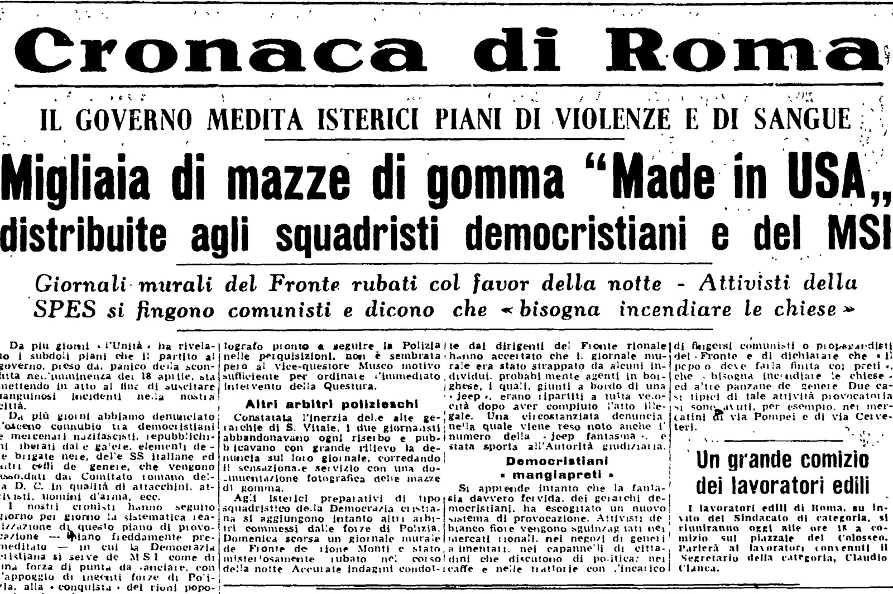
Questa interpretazione comincia con una frase su l’Unità nell’aprile del 1948. L’articolo parla di “migliaia di mazze di gomma Made in USA distribuite agli squadristi democristiani e del MSI”.
Nello stesso anno compaiono gli articoli “Insurrezione comunista ‘made in USA’” e “‘Civiltà’ made in USA”.
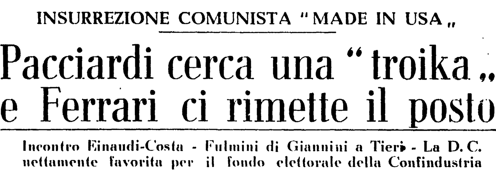
La formula “made in” entra nel vocabolario politico italiano come marcatore del nemico: l’imperialismo americano viene identificato per la sua provenienza, e quella provenienza è la sua condanna.
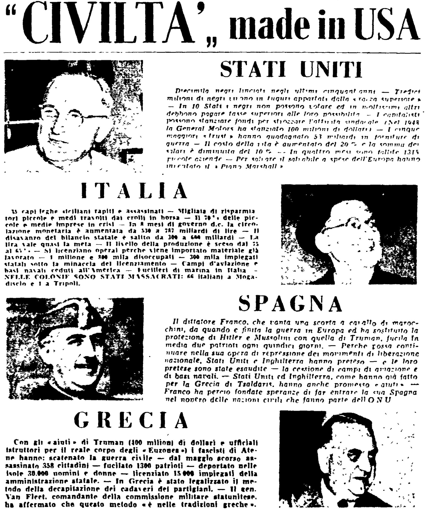
Potrebbe essere una partenza paradossale per quello che diventerà uno dei brand più riconoscibili al mondo.
La formula in lingua inglese “made in…” non nasce come identità positiva italiana — nasce nel 1887 con il Merchandise Marks Act britannico, una legge che obbligava i prodotti tedeschi importati in Gran Bretagna a portare l’indicazione di origine, per proteggere i consumatori dalla concorrenza tedesca percepita come sleale.
Era un marcatore difensivo, quasi un bollino d’infamia. L’Italia impiegherà ottant’anni a ribaltarne il segno.
Che il ribaltamento possa iniziare proprio sul giornale del Partito Comunista Italiano non è privo di logica. L’Unità usa la formula contro gli americani perché la formula stessa è inglese, e l’inglese è la lingua del nemico; usarla contro di loro è un’appropriazione polemica. Ma facendo così, introduce la formula nella lingua quotidiana italiana, la normalizza, la rende disponibile per usi futuri.
Nel 1949 “La Cina cammina in fretta, e senza dubbio non e lontano il giorno in cui i cinesi potranno guardare con distacco, senza risentimento, alle manifestazioni della cultura anglosassone, e riavvicinarsi a Dickens o Shakespeare anche se parlano la stessa lingua dei soldati dell'oppio e dei protettori di Ciang Kai Sek. II popolo cinese è generoso: appena sparito il Giappone come forza e come pericolo di oppressione nazionale, nessuno sembra più odiare ciò che è giapponese; nessuno ci pensa, forse. Sarà lo stesso, senza dubbio, per l'Inghilterra e per l'America. Per il momento è molto forte in tutti la reazione contro il passato, e il passato della Cina era in gran parte”made in England” o “made in USA”. L'avvenire sarà “made in China”, e i cinesi sanno molto bene tutto questo.” Lungimirante.
Questa prima fase — gli anni 1948–1957 — non c’è ancora un brand “Made in Italy”, non c’è una politica, non c’è nemmeno un’intenzione.
C’è una cultura artigianale diffusa che non si conosce ancora come tale, e c’è una formula linguistica che circola con segno negativo.
Sì, ed è un passaggio importante.
Prima che si affermasse davvero il concetto di Made in Italy come marchio nazionale, esiste già un momento in cui all’estero si comincia a riconoscere uno stile italiano. È qui che entra in gioco l’Italian style: non ancora un brand compatto, ma una reputazione culturale ed estetica.
Le Sorelle Fontana sono centrali proprio in questo snodo. Negli anni ’50 contribuiscono a dare visibilità internazionale all’alta moda italiana, insieme ad altri nomi come Emilio Schuberth, Simonetta, Capucci, Pucci. In questa fase l’Italia non vende ancora soprattutto un’etichetta-paese nel senso moderno del termine: vende eleganza, taglio, gusto, artigianalità, capacità di reinterpretare la moda in modo meno rigido di Parigi e più legato a un’idea di vita moderna, sofisticata ma portabile.
Per questo si può dire che l’Italian style viene prima del Made in Italy. Il primo è un riconoscimento estetico e culturale; il secondo, più tardi, diventa anche una formula economica, produttiva e commerciale. All’inizio il mondo vede “lo stile italiano”; solo dopo comincia a leggere quel valore come qualità sistemica dei prodotti italiani.
In altre parole: prima si afferma un immaginario, poi si consolida un marchio. La moda, con le Sorelle Fontana e con il sistema delle sfilate italiane, è uno dei luoghi in cui questa trasformazione diventa visibile più presto.
Due eventi nello stesso anno
Nel 1953 accadono due cose che apparentemente non si parlano.
I cinegiornali della Settimana INCOM — proiettati nelle sale cinematografiche prima del film, ogni settimana, tra il 1946 e il 1965 — mostrano l’Italia che torna a produrre ed esportare.
La sequenza è minuziosa: turisti alle dogane, acciaierie di Cornigliano, impianti di metanodotto, padiglioni della Fiera di Milano, auto da corsa Alfa Romeo e Ferrari, sfilate di moda, campi di tabacco, fisarmoniche, Vespa caricata sui vagoni del treno. Alla fine: “magazzinieri applicano sulle casse di legno l’etichetta ‘Made in Italy’”. La destinazione, leggibile sul legno, sono gli Stati Uniti.
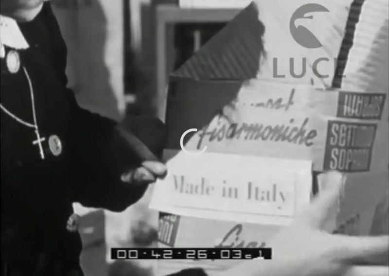
In quel fotogramma, “Made in Italy” è letteralmente un’etichetta materiale — un atto doganale, non un racconto. Non c’è una strategia di branding nazionale, non c’è una narrazione unitaria, non c’è un posizionamento consapevole come “stile di vita”. C’è il gesto fisico di un operaio che incolla un cartellino su una cassa di fisarmoniche.
Sempre nel 1953, Made in Italy è il titolo di una rivista teatrale firmata da Pietro Garinei e Sandro Giovannini — con Erminio Macario ed Wanda Osiris.
Lo spettacolo è una rivista musicale: sketch comici, numeri musicali, coreografie, satira leggera sull’Italia contemporanea.
Il titolo è scelto deliberatamente: in scena c’è l’Italia moderna, brillante, elegante (Wanda Osiris, i costumi, le scenografie) accanto all’ironia popolare (Macario).
È un’affermazione di stile ante litteram: questo è il nuovo stile italiano.
Nel 1953 il Made in Italy non è un marchio, un brand. E' una "etichetta", un atto burocratico applicato alle merci.
C’è il sistema produttivo (acciaio, tessile, meccanica, agroalimentare); poi c’è l’immaginario (cinema, moda, sport, design); infine c’è la logistica dell’ export (treni, navi, casse). Solo lì compare l’etichetta “Made in Italy”
Non è il marchio che crea il valore, è il prodotto che giustifica l’etichetta. L’etichetta serve a identificare l’origine (dogana, commercio internazionale) e rassicurare sul fatto che “è stato fatto in Italia”, ad accompagnare fisicamente la merce verso gli USA o altri mercati.
Il “Made in Italy” del 1953 è ibrido, non solo moda o lusso, ma industria pesante (Cornigliano), infrastrutture (metanodotti, dighe), meccanica (auto, moto, macchine da scrivere), agroalimentare, cultura (cinema).
Nel 1965 poi Nanni Loy girerà il film "Made in Italy".
Non è un marchio industriale né un’etichetta export: è un titolo-simbolo, usato per raccontare gli italiani, i loro costumi, il lavoro, la famiglia, il rapporto con lo Stato e con la Chiesa.
È, di fatto, un’etichetta antropologica.
Il film dimostra che l’espressione era già sufficientemente riconoscibile da funzionare come formula culturale e narrativa.
Non descrive un prodotto, ma un tipo umano, uno stile nazionale, un autoritratto ironico del Paese.
Loy prende un’espressione che nel linguaggio commerciale suggerisce qualità e la rovescia: la applica agli italiani come “prodotto”, mettendo in scena vizi, contraddizioni e piccole furbizie quotidiane, in piena tradizione della commedia all’italiana.
Il film è costruito per quadri, più che per personaggi: una sequenza di tipi sociali. Il titolo diventa così un’etichetta da catalogo implicita: “questo è il prodotto Italia”
Prima ancora di diventare un brand economico, Made in Italy è quindi uno sguardo su sé stessi.
In questa fase l’espressione è ancora fluida: indica uno stile, un modo di essere, un tratto identitario che circola tra cinema, giornalismo e pubblicità nascente
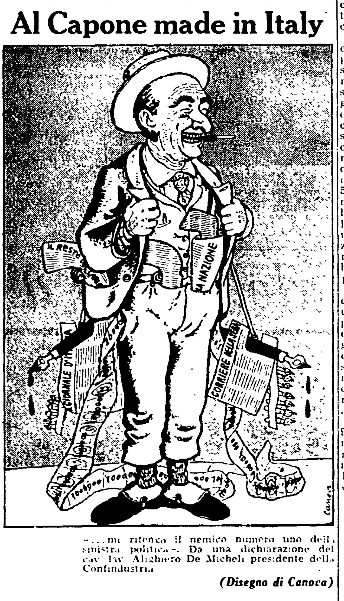
Solo tra anni ’70 e ’80 si cristallizzerà come marchio competitivo legato a moda, design e manifattura. Ma quel passaggio sarà possibile proprio perché il terreno culturale era già pronto
La struttura duale è forse la chiave di lettura più precisa dell’intera storia che sto raccontando. In quello stesso periodo la formula “Made in Italy” esiste in due registri completamente separati e apparentemente non comunicanti:
come atto burocratico — l’etichetta fisica incollata sulla cassa destinata agli USA
come titolo culturale — la rivista teatrale o il film che nomina un’identità
Il brand nasce quando questi due registri si fondono. Ma ci vorranno ancora vent’anni.
I premi prima del brand
Tra il 1949 e la fine degli anni ’60, l’Italia costruisce un sistema di certificazione della qualità che è il precursore diretto del brand e che si protrarrà per almeno venti anni. Non è ancora narrazione, non è ancora identità esportabile: è verifica tecnica, timbri, riconoscimenti istituzionali.
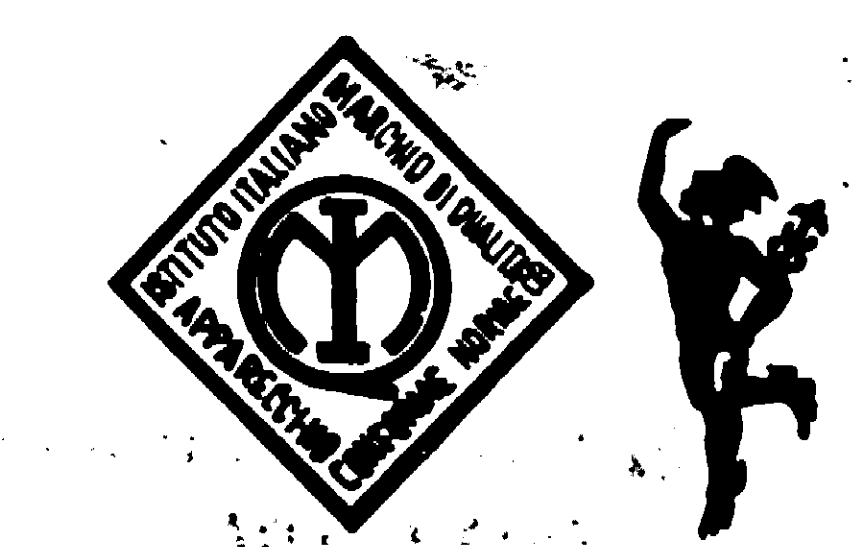
Il Premio Mercurio d’Oro nasce nel 1949 come “Oscar del commercio”.
Assegnato a Roma a imprese considerate affidabili, solide, competitive.
Nel 1966 lo ricevono Snaidero (cucine), Marazzi (ceramiche), Pozzo (maglieria): aziende del Nord-Est e del Centro, settori che poi diventeranno il nucleo del Made in Italy manifatturiero.
Nel 1969 è la volta di Prandoni (televisori) e delle Latterie Soresine.
La qualità non è ancora “moda” né “lusso” — è ceramica, maglieria, latticini, televisori.
Ma il Mercurio d’Oro non è solo. Accanto a lui operano l’Ercole d’Oro — che premia l’organizzazione industriale e la solidità operativa, richiamando la forza di Ercole — e la Vittoria della Qualità, che premia la qualità percepita dal consumatore.
Una pubblicità di Birra Moretti del 1970 li mostra tutti e tre insieme:
Mercurio d’Oro (1963),
Ercole d’Oro (1967),
Vittoria della Qualità (1970).
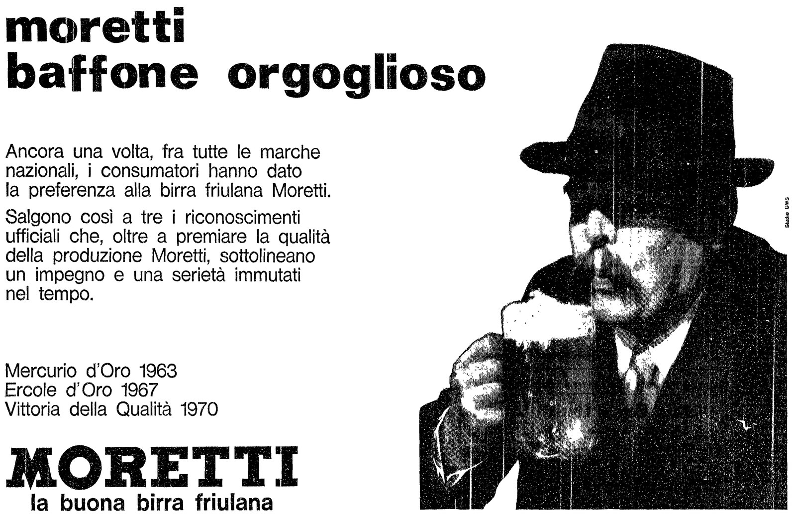
La sequenza non è casuale — è una narrazione di affidabilità costruita nel tempo: prima dimostri di essere un’azienda seria, poi di saper produrre, infine vieni riconosciuto dal mercato.
La stessa logica appare nelle lavatrici REX, che nella pubblicità del 1959 si presentano con la formula: “garantite dal Marchio di qualità e dal Mercurio d’oro”. La qualità si certifica con timbri e premi, non con il racconto.
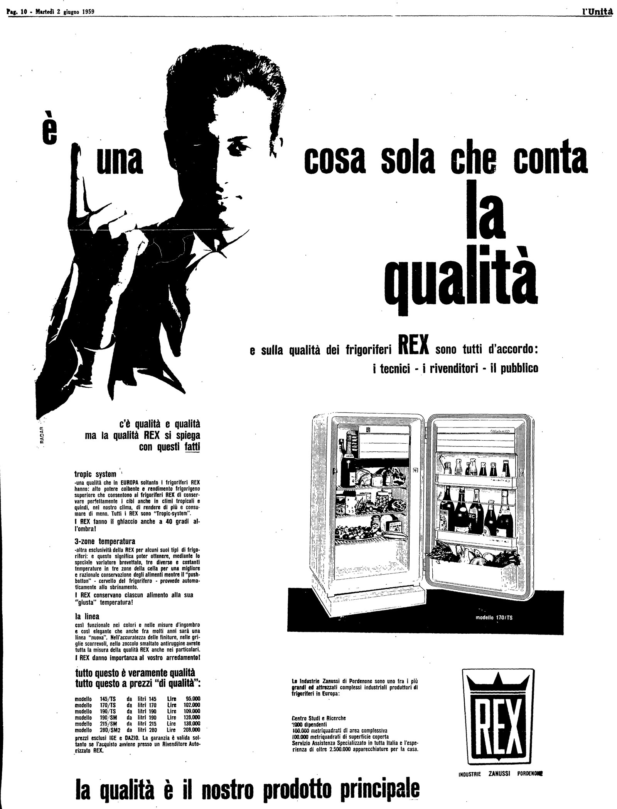
Questa è la logica del pre-brand: istituzioni, premi, verifiche tecniche come sostituti della narrazione. Sono strumenti tipici di una fase in cui la fiducia del consumatore deve essere costruita dall’alto, quando i mercati non si autoregolano ancora attraverso la reputazione diffusa.
Parallelamente, la Settimana INCOM svolge una funzione analoga sul versante visivo: i cinegiornali proiettati nelle sale costruiscono l’immagine di un’Italia che vuole essere riconosciuta fuori. Non è “propaganda”; è qualcosa di intermedio tra la comunicazione istituzionale e il marketing moderno, dove Stato, industria e immaginario collettivo iniziano a convergere.
Negli anni ’60 non c’è alcuna narrazione identitaria, nessun richiamo al “Made in” come lo intendiamo oggi. I prodotti sono elencati per funzione, prezzo, caratteristiche tecniche. Conta avere il frigorifero, la lavatrice, la radio a transistor. Conta che funzioni e che sia accessibile.
Dentro la pubblicità convivono marchi italiani, tedeschi, olandesi, riferimenti espliciti al “giapponese”. Ma non c’è gerarchia simbolica: l’origine non è ancora un valore, è solo un’informazione. Il criterio di scelta è semplice e molto concreto: tecnologia, affidabilità percepita, prezzo.
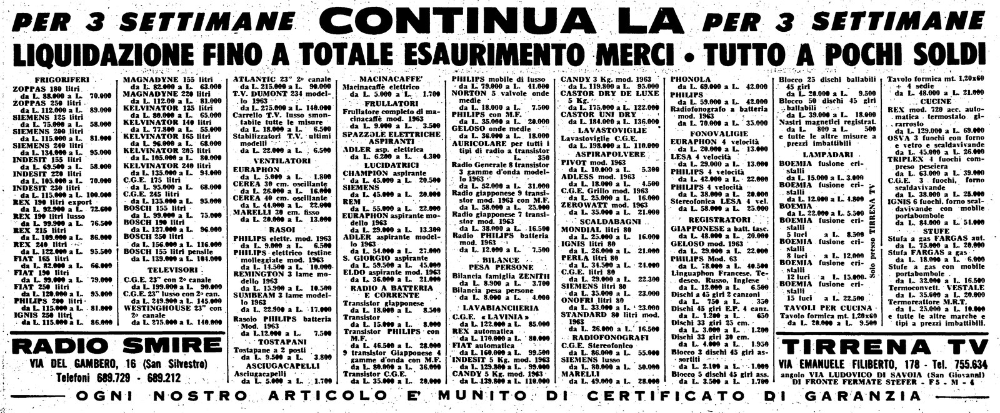
Siamo nel pieno della diffusione dell’elettronica di consumo, nel passaggio dalle valvole ai transistor. Il mercato si sta formando, più che differenziando. Il consumatore non compra “italiano” o “giapponese”: compra ciò che gli permette di entrare nella modernità.
Il Made in Italy non nasce come brand, ma arriva dopo, quando il mercato smette di essere solo espansione e diventa competizione tra identità produttive. Prima viene la funzione. Solo dopo arriva il racconto.
Con la nascita della Comunità Economica Europea nel 1957 si compie un passaggio strutturale: per la prima volta si costruisce uno spazio economico sovranazionale in cui le merci possono circolare con barriere progressivamente ridotte. Non è solo una scelta politica, è un cambio di paradigma industriale. Le imprese iniziano a operare in un mercato più ampio, la produzione si organizza su scala maggiore, la concorrenza smette di essere solo interna e diventa europea.
Negli anni ’60 questo processo si traduce in diffusione dei beni di consumo, dell’elettronica, degli elettrodomestici, di una nuova idea di modernità accessibile. Il mercato è ancora in fase di espansione e assorbimento della domanda. Per questo motivo l’origine del prodotto resta un’informazione secondaria. Il “made in” esiste, ma non è ancora un segnale di valore: serve a indicare da dove viene un bene, non cosa rappresenta.
Le scelte di acquisto sono guidate da criteri molto concreti: prezzo, funzionalità, disponibilità, novità tecnologica. Il consumatore non cerca un’identità, cerca un miglioramento della propria condizione materiale. In questo senso, riferimenti come “giapponese” o “tedesco” iniziano a emergere, ma più come associazioni spontanee alla tecnologia o all’affidabilità che come vere e proprie marche culturali strutturate.
In questa fase il mercato viene prima della narrazione.
Prima si costruisce lo spazio economico integrato, poi si sviluppano le differenziazioni al suo interno.
Non è solo che il Made in Italy “non esiste ancora”, è che non serve ancora. Il mercato è in espansione, la domanda assorbe tutto, la differenziazione non è necessaria. Questa è una chiave economica forte che rende inevitabile tutto quello che succede dopo.
È solo quando la crescita rallenta, la concorrenza aumenta e i prodotti diventano più simili tra loro che emerge il bisogno di distinguersi. Ed è lì, tra gli anni ’70 e ’80, che l’origine nazionale si trasforma in un asset competitivo.
Il “Made in Italy” nasce non come etichetta tecnica, ma come costruzione progressiva di significato. Stile, qualità percepita, cultura produttiva diventano elementi di differenziazione dentro un mercato ormai maturo. In altre parole, non è il punto di partenza dello sviluppo industriale italiano, ma una sua evoluzione: il risultato di un sistema produttivo che, una volta entrato pienamente nella competizione europea, ha iniziato a raccontare se stesso.
La struttura produttiva e le tre Italie
Mentre i premi certificano la qualità delle singole imprese, sotto la superficie si sta ridisegnando la mappa economica del Paese.
Il ruolo abilitante delle istituzioni
Prima di leggere i dati, è necessario correggere un equivoco frequente: dire che il Made in Italy non è un fenomeno top-down non significa che le istituzioni siano state irrilevanti. Significa che non lo hanno generato.
Lo hanno però reso scalabile e credibile sui mercati esteri — e questa è una differenza che conta.
Il Consiglio Nazionale delle Ricerche, indirettamente già negli anni ‘50 con l’Istituto Marchio di Qualità, forniva la base tecnica alle certificazioni di qualità che poi si traducevano in premi e marchi.
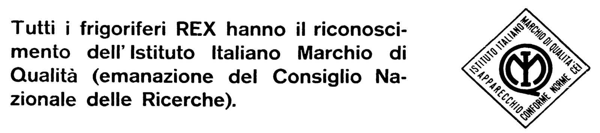
Le fiere hanno avuto un ruolo diretto: la Campionaria di Firenze del settembre-ottobre 1970 è documentata da l’Unità come “la mostra intesa come strumento di promozione” per le calzature italiane, esplicitamente orientata all’export.
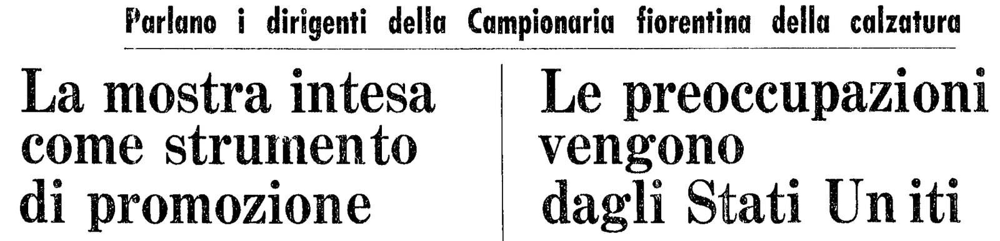
Nel 1970 lo studio La Terza Italia cartografa il modello distrettuale proprio mentre si sta formando. Un atto di riconoscimento istituzionale che accelera la consapevolezza del sistema.
La stessa MOACASA (1975) nasce come cooperativa fieristica, cioè come infrastruttura istituzionale a sostegno di imprese che da sole non avrebbero avuto accesso a una vetrina.
Senza questa infrastruttura di fiere, norme tecniche, camere di commercio e sistema premiale, il Made in Italy sarebbe rimasto un fenomeno locale — buono, ma non esportabile a scala. Le istituzioni non hanno creato i distretti, ma hanno creato i ponti tra i distretti e i mercati internazionali.
I dati del PIL pro capite regionale relativo — con l’Italia posta uguale a 100 — mostrano che negli anni ’50, il Nord-Ovest (Milano, Torino, Genova: la grande industria, il fordismo, la scala) è a circa 150: è il motore industriale del Paese, molto sopra la media. Il Nord-Est e il Centro sono appena sopra 100. Il Sud è sotto.
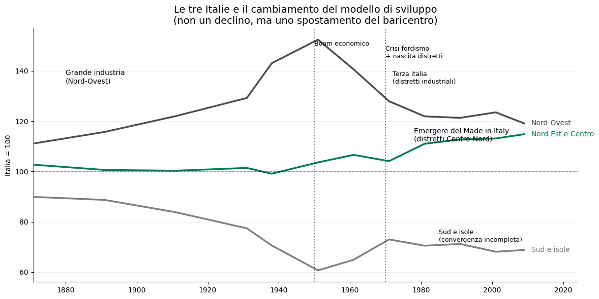
A partire dagli anni ’60, il Nord-Ovest inizia un lento declino relativo. Il Nord-Est e il Centro iniziano invece a salire — lentamente, ma con continuità. Il divario tra le due aree si riduce progressivamente: da circa 50 punti negli anni ’50 a circa 5 punti nel 2009.
Questo è il dato empirico che Giacomo Becattini ha letto teoricamente meglio di chiunque altro.
Becattini (Firenze, 1927 – Scandicci, 2017) era professore di economia politica all’Università di Firenze.
Il suo approccio, spesso definito "eretico" o multidisciplinare, ha integrato economia, storia e sociologia, sottolineando che lo sviluppo non è solo un fatto meccanico ma un processo partecipativo radicato nei luoghi.
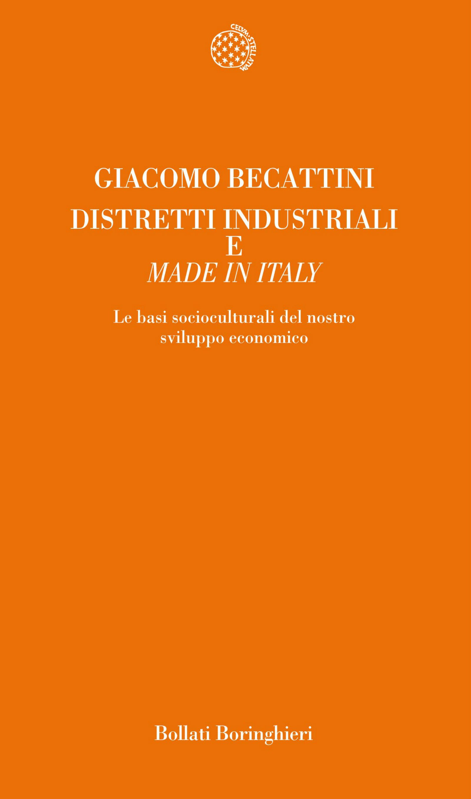
Il suo laboratorio empirico era il distretto tessile di Prato. Ma quello che vedeva a Prato non era “il tessile” — era un modello generale: integrazione tra economia e società locale, conoscenza diffusa e incorporata nelle persone, divisione del lavoro fine tra piccole imprese specializzate, competizione e cooperazione simultanee all’interno della stessa filiera.
Il distretto non era un mercato puro né una gerarchia: era una forma intermedia, socio-economica, in cui le relazioni di fiducia e le norme sociali regolavano in parte ciò che altrove regolavano i prezzi.
Il territorio come motore invisibile
L’intuizione cruciale di Becattini era che la piccola dimensione d’impresa non fosse un limite da correggere, ma una condizione di efficienza in contesti di domanda variabile e prodotto differenziato. Il distretto vince quando la domanda è instabile, il prodotto richiede qualità e varietà, l’innovazione è continua ma incrementale. Esattamente le condizioni del Made in Italy.
Ma c’è un ulteriore livello: il distretto non è solo organizzazione produttiva, è organizzazione territoriale della conoscenza.
La vera risorsa competitiva è la conoscenza incorporata nelle persone — non codificata nei manuali, non concentrata in un brevetto, ma diffusa nelle competenze degli operai, nell’esperienza degli imprenditori, nella circolazione informale di soluzioni tecniche. Questa conoscenza tacita non si trasferisce con la delocalizzazione di un impianto e non si replica per decreto.
La complementarità grande-piccolo
Attenzione però a non leggere la storia dei distretti come un inno al “piccolo è bello”. Il sistema italiano ha funzionato proprio perché non era solo piccolo.
La grande industria del Nord-Ovest — e con essa le partecipazioni statali (IRI, ENI, GEPI) — ha svolto un ruolo che i distretti da soli non potevano: mantenere le filiere in vita nelle fasi di crisi, assorbire i fallimenti industriali senza provocare collassi a catena, garantire accesso a tecnologie e mercati di scala.
Quando, negli anni ’70, imprese in difficoltà venivano assorbite dallo Stato tramite IRI o GEPI, il meccanismo non era efficiente — ma evitava che il fallimento disorientato distruggesse le filiere di subfornitura, quelle stesse filiere che alimentavano i distretti. Come emerge dall’analisi dei documenti dell’epoca, il dibattito era già allora aperto: lo Stato non è più solo “salvatore”, stava diventando gestore permanente di crisi industriali.
Il Made in Italy maturo emerge fuori da quel circuito — ma non nonostante di esso, anche grazie alla rete di protezione che quel circuito, per quanto imperfetto, garantiva.
Nel 1970 uno studio descrive un modello di sviluppo alternativo sia alla grande industria nordoccidentale sia al ritardo del Mezzogiorno: PMI, specializzazione territoriale, filiere corte, alto capitale sociale. È la cartografia del fenomeno che Becattini stava teorizzando.
In questo stesso periodo — 1975 — nasce a Roma MOACASA: una fiera dell’arredamento organizzata dalla cooperativa MOA, creata per aggregare le piccole e medie imprese del mobile e dell’arredo del Lazio e dare loro una vetrina collettiva. Prima edizione nei padiglioni dell’Ente Fiera (via Cristoforo Colombo).
MOACASA si affianca al Salone del Mobile di Milano come presidio romano di un settore che è già, in quegli anni, uno dei pilastri del Made in Italy. Il modello cooperativo di MOA è interessante proprio per la sua specificità: non un distretto nato spontaneamente dal basso, ma un’aggregazione deliberata di imprese che costruiscono insieme una presenza di mercato. È la risposta del Centro alla stessa pressione competitiva che produce i distretti nordici, con uno strumento organizzativo diverso.
Il paradosso: la globalizzazione non diluisce, trasforma
Lo shock che accelera
Il Made in Italy non nasce “per maturazione naturale” degli anni ’50.
Nasce anche — e forse soprattutto — come risposta adattiva a uno shock.
I dati del PIL regionale relativo mostrano che il declino del Nord-Ovest è già in atto dalla fine degli anni ’50, ma si accelera negli anni ’70.
È il decennio della crisi del fordismo: le grandi imprese manifatturiere del triangolo industriale perdono competitività, i costi del lavoro crescono dopo le lotte del 1968–1969, la crisi petrolifera del 1973 colpisce duramente i settori energivori.
L’Italia si trova davanti a una ristrutturazione obbligata dell’industria.
Chi reagisce con la flessibilità distrettuale sopravvive e cresce; chi dipende dalla grande scala e dal mercato interno entra in crisi.
Il sorpasso del Centro-Nord diffuso sul Nord-Ovest, leggibile nel grafico della convergenza, non è un processo indolore: è il risultato di una selezione forzata dalla pressione competitiva internazionale.
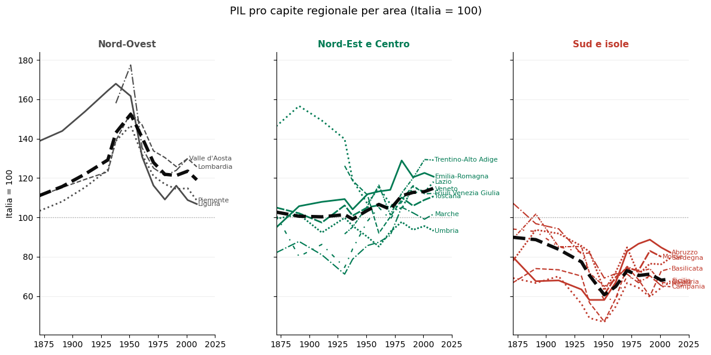
Il 1974–1976 è il triennio in cui questo si rende visibile — e in cui il Made in Italy rivela la sua natura più profonda.
Da un lato, l’Unità titola “Bella e potente la Suzuki ‘rotante’ ma non sarà una moto di massa” (1974).
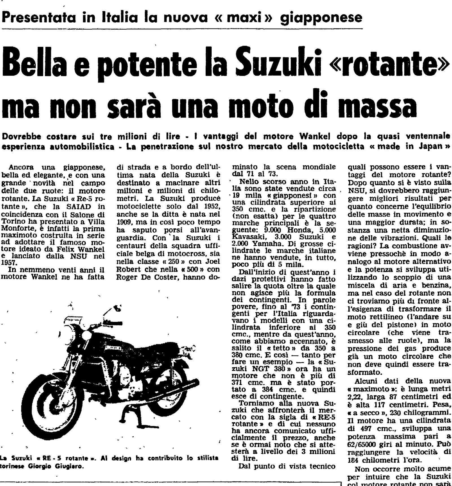
Dall’altro, un articolo del 1976 annuncia: “Dall’Abruzzo la nuova Honda ‘made in Italy’”. Honda aveva aperto uno stabilimento ad Atessa, in Abruzzo, e produceva moto che venivano definite, senza esitazioni, “Made in Italy”.
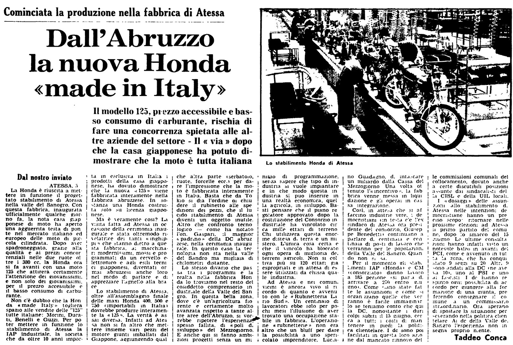
Lo stesso giornale, nello stesso anno, titola: “La Honda è entrata in Italia con una fabbrica fantoccio”.
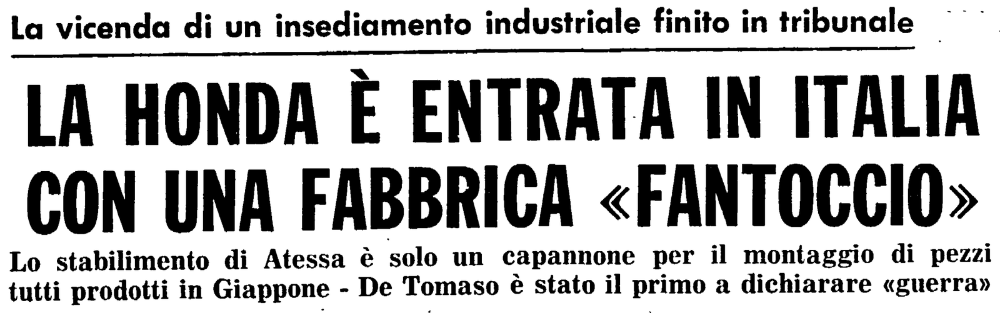
Il paradosso è esplicito: un’azienda giapponese usa la formula “made in Italy” come argomento commerciale per penetrare il mercato europeo. Non è un furto d’identità — è un riconoscimento. Honda non avrebbe scelto quella formula se non avesse avuto valore. Il brand esiste, anche se nessuno l’ha ancora registrato come tale.
Nello stesso periodo, il Made in Italy incontra la sua prima guerra commerciale. “Via libera negli USA alle scarpe italiane” (1976) e “Una tregua per le scarpe ma non per i giocattoli” testimoniano il tentativo americano di limitare l’import di calzature italiane. La scarpa italiana è già una minaccia percepita dagli importatori statunitensi — questo è il dato più significativo.
Il 1977 porta invece un documento straordinario dal distretto senese dell’abbigliamento. Un articolo de l’Unità descrive due processi opposti e simultanei:
“Capi acquistati all’estero vengono venduti con il marchio ‘made in Italy’. In alcune aziende succede l’inverso: piccoli produttori lavorano per celebri creatori di moda stranieri.”
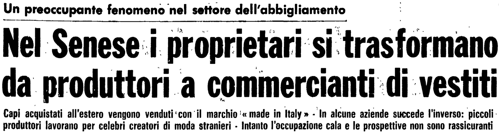
Da un lato, import vestito da made in Italy — il brand usato come etichetta vuota. Dall’altro, manifattura italiana anonima che produce per brand stranieri — il brand straniero come copertura di una qualità italiana. La Terza Italia di Becattini non è solo crescita, è anche riconversione e ibridazione.
Il momento più definitivo è il 1978. La Voxson, azienda italiana di elettronica di consumo, usa nelle proprie pubblicità la formula “Made in Italy” come argomento competitivo contro i prodotti giapponesi (Sony, Panasonic). Una nota industria tedesca la cita davanti al Gran Giurì Pubblicitario per concorrenza sleale. La Voxson viene condannata. Nella sua risposta, scrive: “condannando questo modo di fare pubblicità si finisce col mantenere solo uno stato di disinformazione del consumatore italiano sulla reale provenienza” dei prodotti.
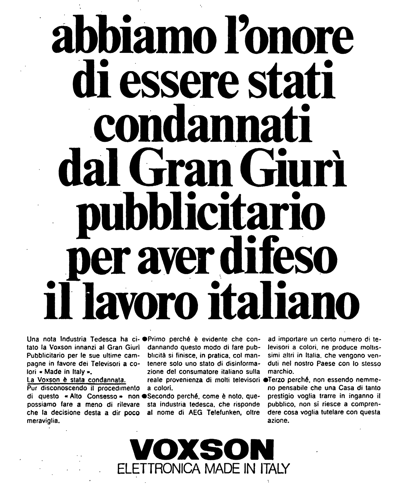
Nel 1978, usare “made in Italy” come argomento pubblicitario è ancora illegittimo per il mercato: viene censurato. Diventa legittimo — anzi potente — solo negli anni immediatamente successivi. La Voxson perde il procedimento, ma la storia le dà ragione.
La sintesi: anni ’80
Il 1980 è l’anno della svolta assertiva.
Tre articoli de l’Unità segnano il cambiamento di tono.
“La scarpa italiana è quella che fa moda” — non più una domanda, non più una difesa: un’affermazione.
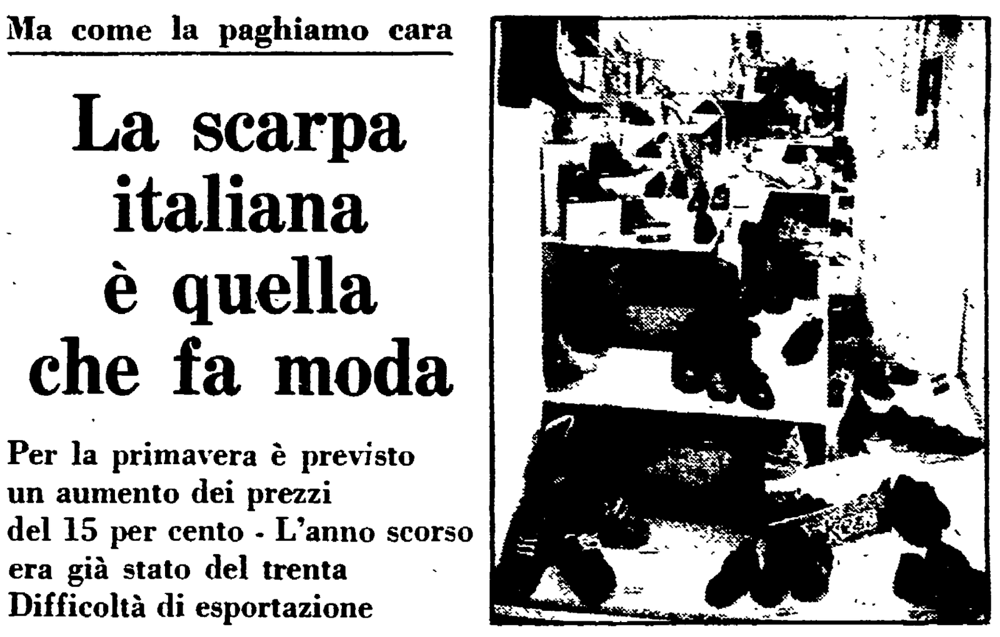
“Vetture tutte ‘made in Italy’ (e le vogliono anche in USA)” — la domanda americana come prova del riconoscimento.
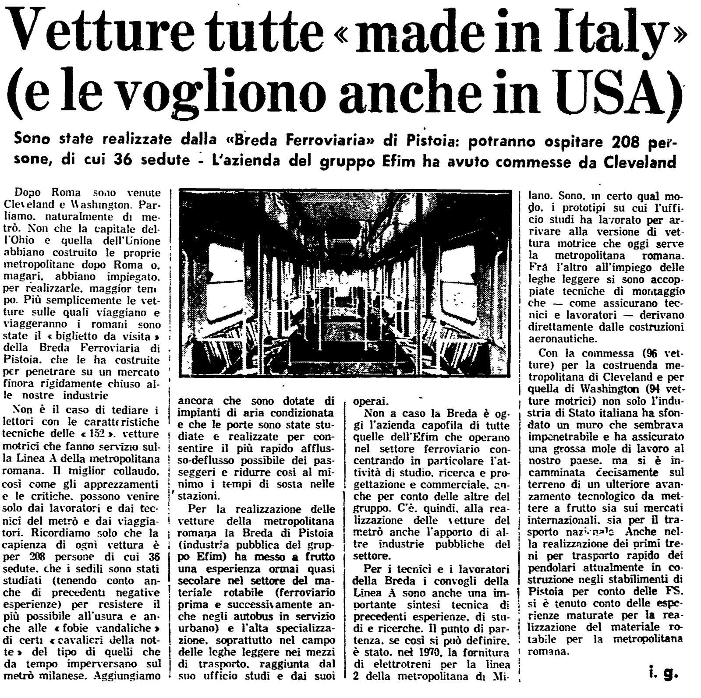
“Made in Japan al 20%” — il confronto con il Giappone è ora sul terreno della qualità, non della quantità.
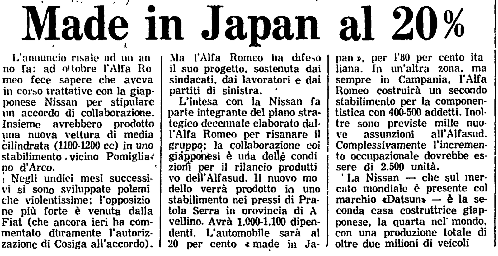
Nel 1982, “L’Italia è più ‘multinazionale’”: la piccola impresa italiana come attore globale. Il modello distrettuale si internazionalizza senza perdere la base territoriale.
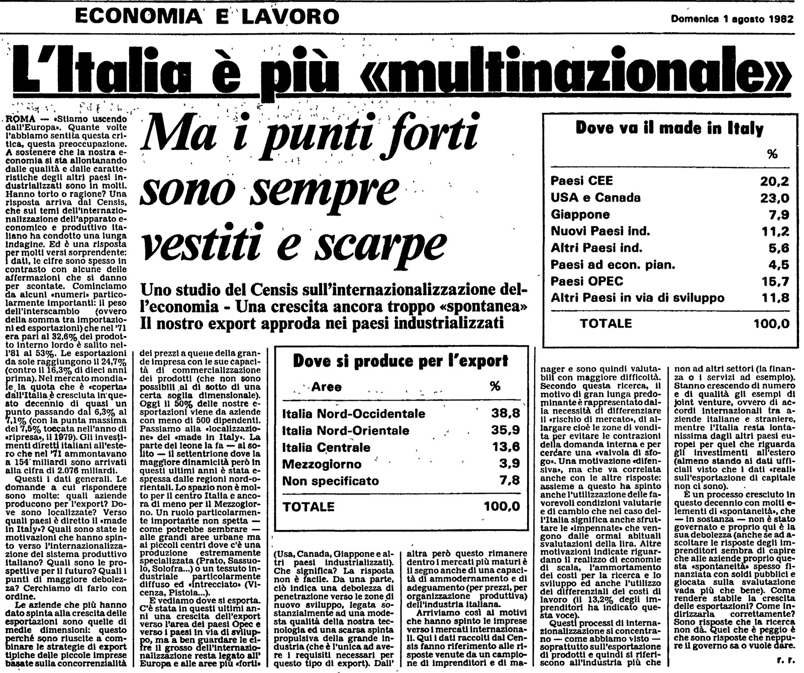
Nel 1983, “New York replica al ‘made in Italy’”: l’articolo riguarda la risposta dell’arte americana — graffiti, Keith Haring — alla Transavanguardia italiana (Achille Bonito Oliva). Il “made in Italy” è ormai talmente potente che New York sente il bisogno di replicare. Il termine viene usato senza virgolette difensive, come categoria acquisita.
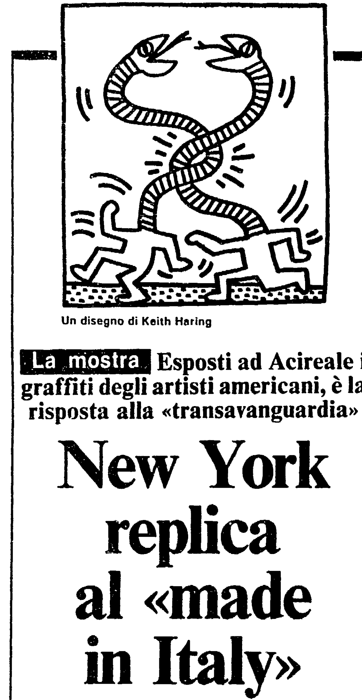
Nel 1985, “La realtà di un made in Italy molto speciale, anche nel prezzo” — il brand è consolidato, ma emergono le prime tensioni sul pricing. Inizia la fase della gestione del brand, non più della sua costruzione.
Il grafico del PIL pro capite regionale relativo mostra con precisione quando avviene questa sintesi. Il Made in Italy maturo emerge negli anni ’70–’80 — esattamente quando il Nord-Est e il Centro iniziano il loro sorpasso relativo sul Nord-Ovest. Non nasce nel momento di massimo della grande industria (anni ’50), ma quando quel modello entra in crisi relativa e un’altra Italia — quella dei distretti, delle PMI, della filiera corta — prende il sopravvento.
Il Made in Italy non è nato come brand, ma come effetto di un cambio strutturale dell’economia italiana
- anni ‘50–’60: Italian style (riconoscimento esterno)
- anni ’60–’70: strutturazione industriale
- anni ’70–’80: sintesi “Made in Italy” + distretti
Il “Made in Italy” non nasce quando l’Italia è forte; nasce quando cambia il modello di sviluppo
Questo grafico confronta due Italie:
- il Nord-Ovest (Milano, Torino, Genova → grandi fabbriche)
- il Nord-Est e Centro (Veneto, Emilia, Toscana → piccole imprese, distretti)
E misura quanto sono ricche rispetto alla media italiana.
All’inizio (anni ’50): il Nord-Ovest è molto più ricco della media; l’altra Italia è solo un po’ sopra la media. C’è un divario enorme
Con il passare degli anni il Nord-Ovest perde un po’ di vantaggio, il Nord-Est e Centro crescono lentamente ma costantemente; le due linee si avvicinano
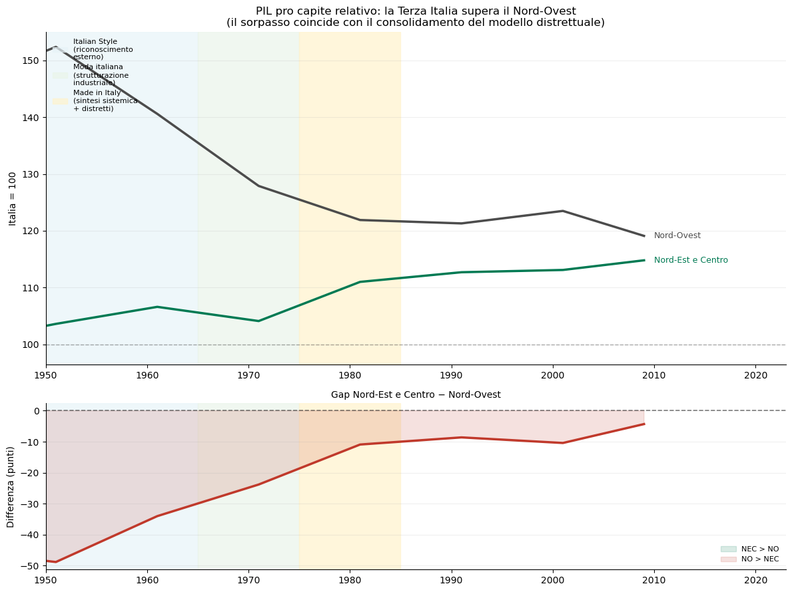
Tradotto in parole semplici: all’inizio l’Italia “ricca” è quella delle grandi fabbriche. Poi cresce un’altra Italia fatta di tante piccole imprese, che piano piano recupera terreno
Il “Made in Italy” vero nasce proprio quando cresce questa seconda Italia
cioè non nelle grandi industrie ma nei territori pieni di piccole imprese (moda, mobili, meccanica, ecc.)
Non è il brand che crea crescita; è il modello produttivo territoriale che genera valore
Il “Made in Italy” arriva dopo come etichetta di sintesi di un sistema già funzionante
Il vero Made In Italy è quello degli anni ’70–’80, non quello puramente etichetta degli anni ’50
Il successo storico è legato a territorio, filiere locali, conoscenza diffusa
Se questi elementi si indeboliscono con la globalizzazione e la delocalizzazione rimane il nome… ma non il modello che lo sosteneva
“il Made in Italy non nasce dall’industria, ma dal riconoscimento di uno stile che l’industria ha poi organizzato”.
O ancora, nella formulazione di Becattini: i distretti sono il meccanismo, il Made in Italy è uno degli esiti visibili.
Epilogo: due registri, una fusione, un’evoluzione
La storia del Made in Italy è la storia di due registri — culturale e industriale — che impiegano trent’anni a fondersi.
Nel 1953, l’etichetta è un atto doganale.
Nel 1954, è un titolo teatrale. Non si conoscono ancora.
Nel 1978, usarla come argomento pubblicitario è illegittimo.
Nel 1980, è assertiva.
Nel 1983, New York “replica”.
Il brand non nasce quando l’Italia è più forte industrialmente — nasce quando cambia il modello di sviluppo. Non nasce dalla grande industria del Nord-Ovest, ma dal suo superamento: dalla Terza Italia, dai distretti, dalle PMI che scalano senza standardizzare. Non nasce contro la globalizzazione, ma attraverso di essa — Honda che chiama “made in Italy” una moto fatta ad Atessa ne è la prova più lampante.
Becattini aveva ragione su una cosa fondamentale: il distretto non è solo un sistema produttivo, è una comunità. La qualità incorporata nelle persone, la conoscenza diffusa nel territorio, le relazioni di fiducia che sostituiscono i contratti — questi elementi non si replicano artificialmente.
Spiegano perché il Made in Italy regga, e perché abbia resistito a pressioni che hanno eroso marchi nazionali ben più sostenuti da politiche pubbliche.
E spiegano anche perché il Mezzogiorno — che pure produce qualità — non abbia generato lo stesso sistema. Non è questione di talento o di prodotti: è questione di densità e continuità economica.
Un’ultima precisazione è necessaria sulla fase più recente.
La pubblicità Conbipel del 1985 — “La realtà di un made in Italy molto speciale, anche nel prezzo” — è un esempio del passaggio dalla costruzione del brand alla sua gestione.
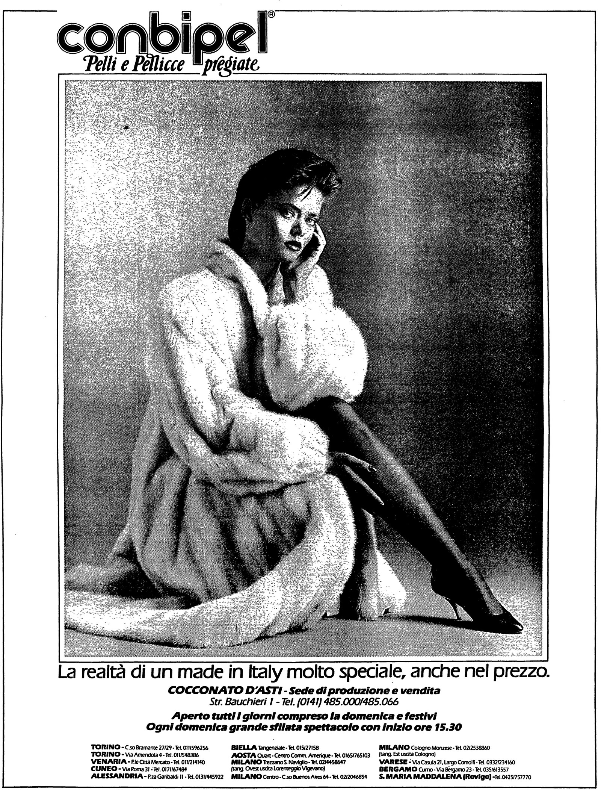
Questo passaggio non è solo una perdita. La separazione tra produzione, proprietà e branding che si consolida dagli anni ‘80 in poi è anche un’evoluzione del modello: il marchio diventa asset immateriale, separabile dalla manifattura, cedibile, internazionalizzabile.
E’ la prova che il Made in Italy può essere narrato in inglese e venduto come racconto: uno svuotamento o un arricchimento del modello originario? Entrambe le cose sono vere.
Quanta parte di quel valore immateriale continua a dipendere dall’organizzazione territoriale della produzione?
Se la risposta è “sempre meno”, allora il Made in Italy cambia davvero natura.
Se la risposta è “ancora molta”, allora il modello distrettuale è più resiliente di quanto la sua rappresentazione mediatica lasci intendere.
Pubblicato in origine su Substack il 18 aprile 2026.
Vedi anche
- Il Made in ItalyIl concetto di “Made in Italy” non nasce come brand, non nasce da una politica industriale, e non nasce nemmeno dall’industria più forte d’Italia.
- Il Made in Italy come modello industrialeIl «Made in Italy» non è soltanto un’etichetta commerciale, ma un modello produttivo strutturato attorno a tre pilastri — la piccola e media impresa, la specializzazione distrettuale, la qualità come vantaggio competitiv
- Giornata Nazionale del Made in Italy 2026La Giornata Nazionale del Made in Italy (15 aprile) conta 730 eventi iscritti al portale MIMIT al 9 aprile 2026, distribuiti in 350 comuni e tutte le regioni.